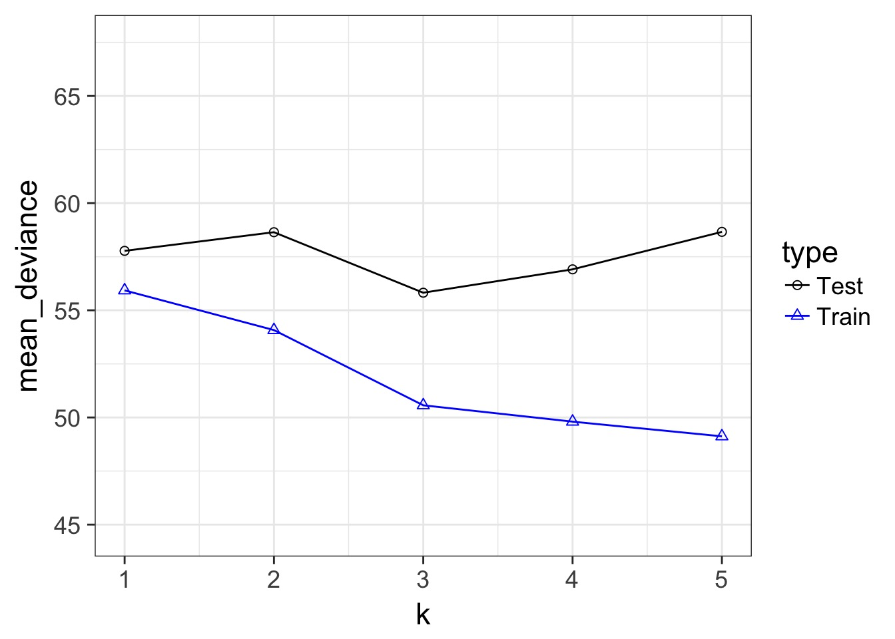
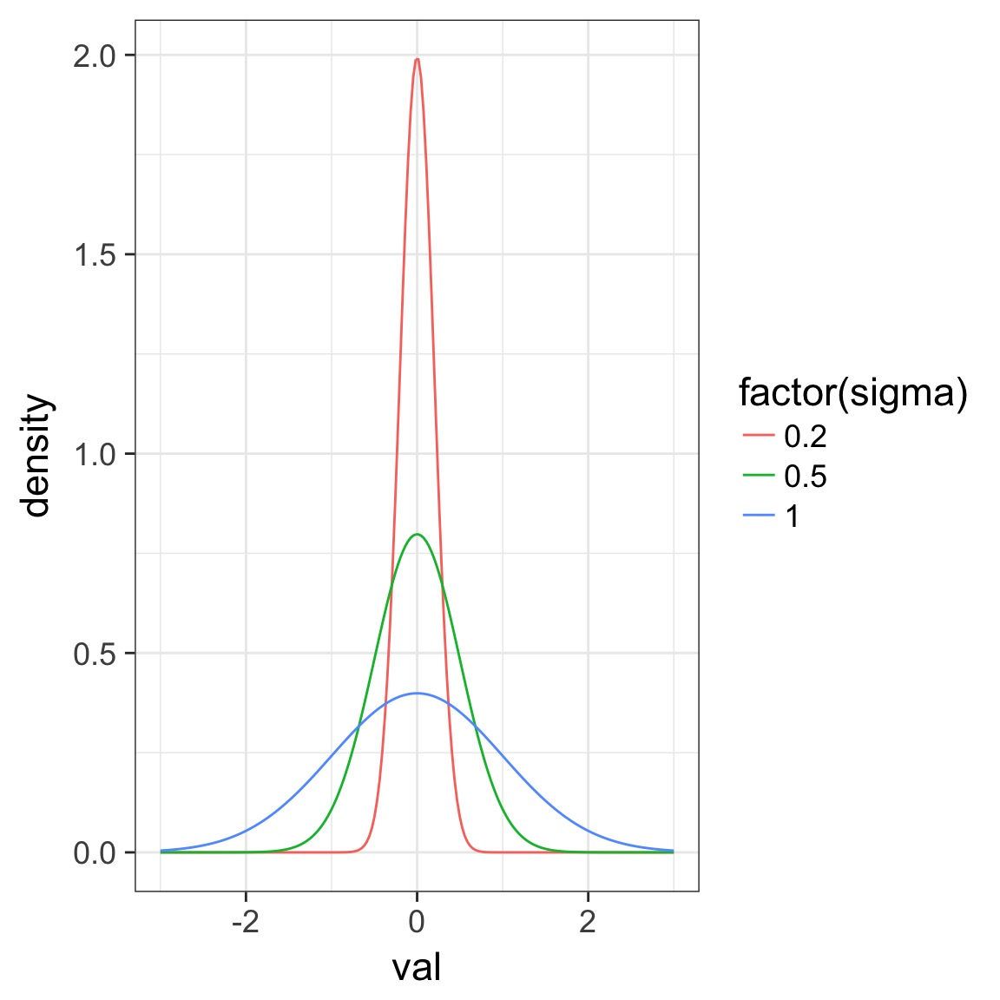
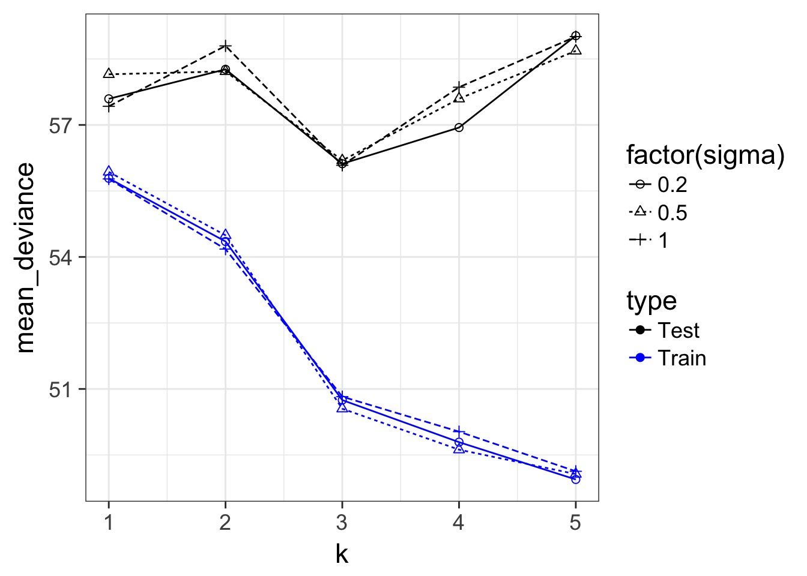
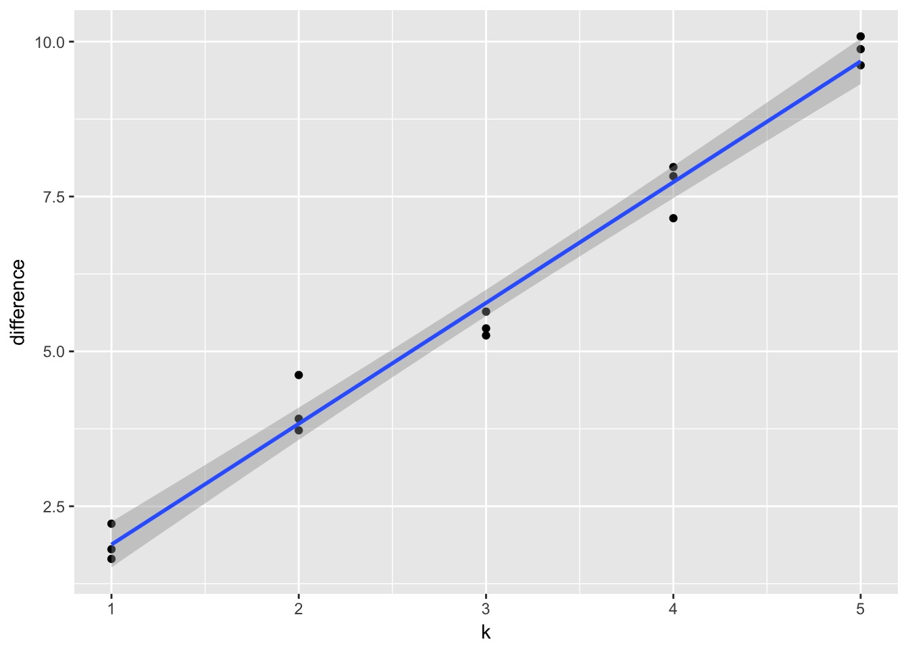
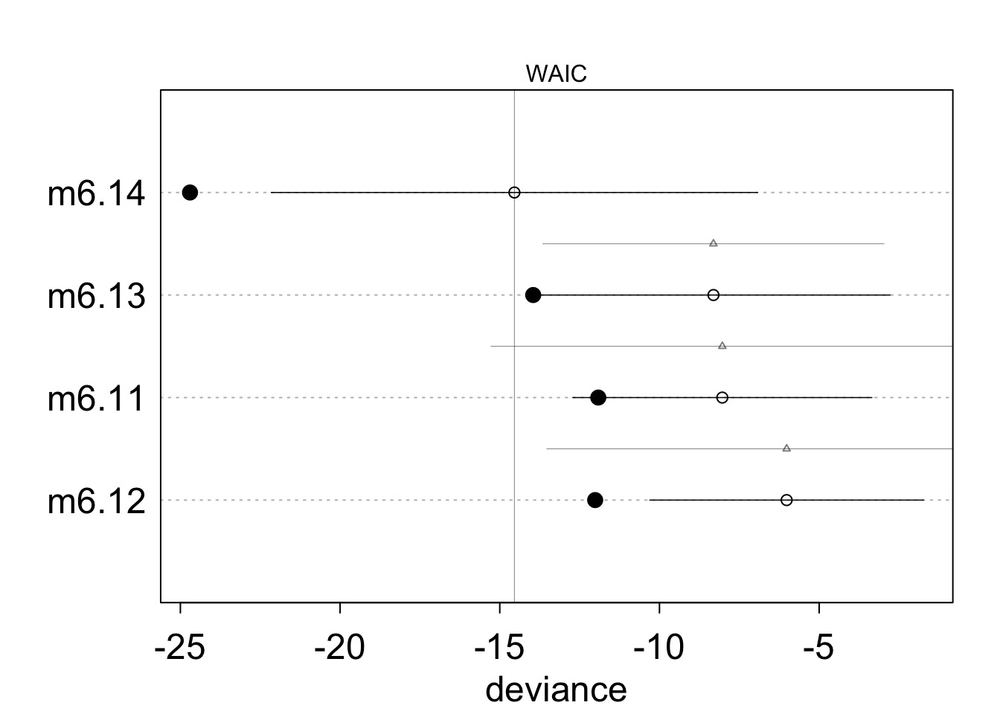
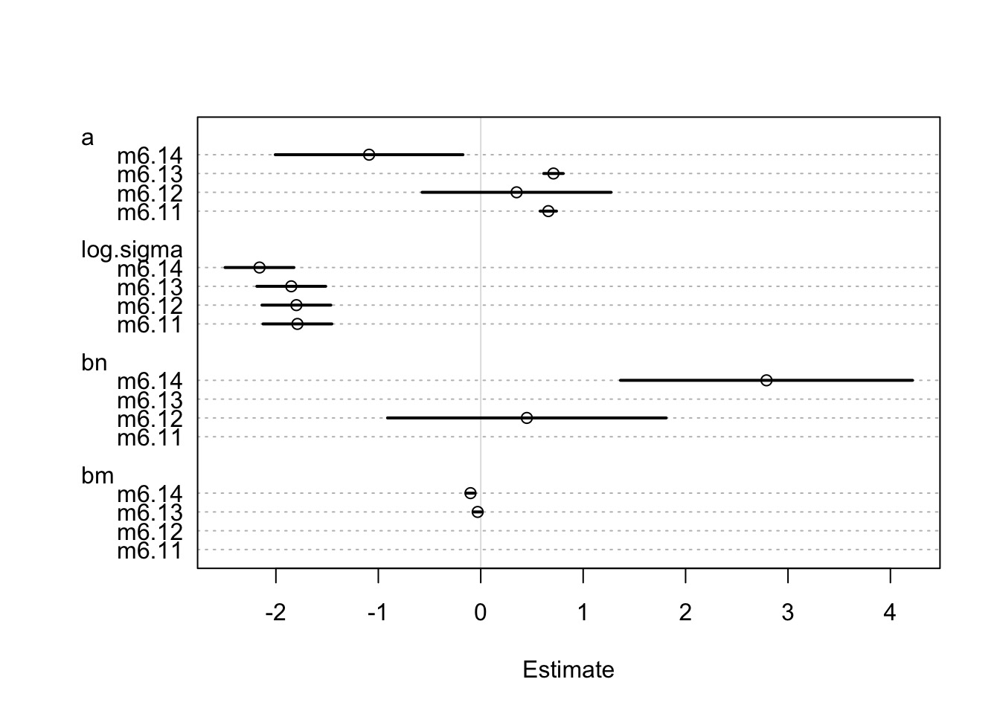
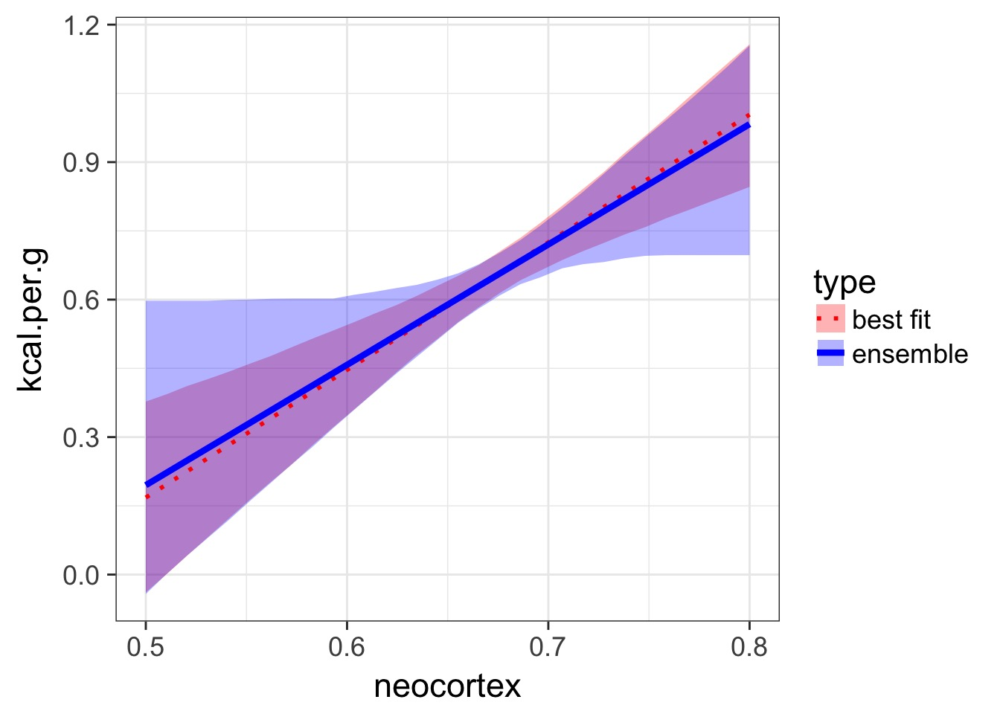

Information Theory and a Multimodel World

How complex a model do you need to be useful?

Some models are simple but good enough

More Complex Models are Not Always Better or Right

Consider this data…
sppnames <- c( "afarensis","africanus",
"habilis","boisei",
"rudolfensis","ergaster","sapiens")
brainvolcc <- c( 438 , 452 , 612, 521, 752, 871, 1350 )
masskg <- c( 37.0 , 35.5 , 34.5 , 41.5 , 55.5 , 61.0 , 53.5 )
d <- data.frame( species=sppnames,
brain=brainvolcc,
mass=masskg )Underfitting

We have explained nothing!
Overfitting

We have perfectly explained this sample
What is the right fit?

How do we Navigate?
- Regularization
- Penalize parameters with weak support
- Penalize parameters with weak support
- Optimization for Prediction
- Information Theory
- Draws from comparison of information loss
- Information Theory
In and Out of Sample Deviance

In and Out of Sample Deviance

Prediction: 806.8141456, Observe: 515
Deviance: 8.526583810^{4}
In and Out of Sample Deviance

Our Goal for Judging Models
- Can we minimize the out of sample deviance
- So, fit a model, and evaluate how different the deviance is for a training versus test data set is
- What can we use to minimize the difference?
Regularlization

- Regularization means shrinking the prior towards 0
- Means data has to work harder to overcome prior
- Good way to shrink weak effects with little data, which are often spurious
- But, requires significant tuning
Regularization and Train-Test Deviance

A Criteria Estimating Test Sample Deviance
- What if we could estimate out of sample deviance?
- The difference between training and testing deviance shows overfitting
A Criteria Estimating Test Sample Deviance
 Slope here of 1.95
AIC

- So, \(E[D_{test}] = D_{train} + 2K\)
- This is Akaike’s Information Criteria (AIC)
\[AIC = Deviance + 2K\]
AIC
- AIC optimized for forecasting (out of sample deviance)
- Requires flat priors
- Assumes large N relative to K
- AICc for a correction
- AICc for a correction
- Difficult to define in a mixed model context
What about IC in Bayes?
- We do estimate the posterior distribution of the deviance
- Average of the posterior, \(\bar{D}\) is our \(D_{train}\)
- But what about # of parameters?
- For a non-mixed model, this is not a concern - just the AIC
- For a mixed model…trickier
- For a non-mixed model, this is not a concern - just the AIC
Effective number of Parameters
- In addition to \(\bar{D}\), there is also \(\hat{D}\)
- The value of the posterior at the posterior mean
- The value of the posterior at the posterior mean
- Given Bayesian logic:
- \(\bar{D}\) is our estimate of the out of sample deviance
- \(\hat{D}\) is our \(D_{train}\)
- So, \(\bar{D} - \hat{D}\) = number of parameters
- We term this \(p_D\) for effective number of parameters
DIC
\[DIC = 2 \bar{D} - 2 p_D\]
## DIC \[DIC = 2 \bar{D} - 2 p_D\]
- Works well for multivariate normal posteriors
- Handles mixed models
- Reduces to AIC with flat priors
- But does not require flat priors - which does interesting things to \(p_D\)!
- But… fails with anything non-normal, and hot debate on even mixed effects
And so we pause…
- Our goal is to maximize prediction
- Why not look at the pieces that make up the deviance
- The pointwise predictive power of the posterior
- The pointwise predictive power of the posterior
- We can define the Pr(yi | posterior simulations)
- This tells us the distribution of the predictive power of our posterior for each point
- \(llpd = \sum log Pr(y_i | \theta)\)
But what about Parameters?
- We know that as k increases, our uncertainty in coefficients increases
- As uncertainty increases, Pr(yi | simulations) widens
- Thus, this variance gives us an effective penalty term
- \(p_{waic} = \sum Var(log Pr(y_i | \theta))\)
Widely Applicable IC
\[WAIC = -2 \sum log Pr(y_i | \theta) + 2 \sum Var(log Pr(y_i | \theta))\]\[= -2 llpd + 2 p_{waic}\]
Disadvantage that inaprporpiate to use with lagged (spatial or temporal) predictors
Which should I use?
- AIC for flat priors, fixed effects is fine
- Adding priors, mixed models, DIC or WAIC
- Non-gaussian posterior? WAIC
- Lagged predictors? DIC
How do I use my IC?
We can calculate:
\[w_{i} = \frac{e^{\Delta_{i}/2 }}{\displaystyle \sum^R_{r=1} e^{\Delta_{i}/2 }}\]
Where \(w_{i}\) is the relative support for model i making the best prediction compared to other models in the set being considered.
Model weights summed together = 1
Monkies and Milk

data(milk)
d <- milk[ complete.cases(milk) , ]
d$neocortex <- d$neocortex.perc / 100A lotta Models
a.start <- mean(d$kcal.per.g)
sigma.start <- log(sd(d$kcal.per.g))
#null
m6.11 <- map(
alist(
kcal.per.g ~ dnorm( a , exp(log.sigma) )
) ,
data=d , start=list(a=a.start,log.sigma=sigma.start) )
#neocortex only
m6.12 <- map(
alist(
kcal.per.g ~ dnorm( mu , exp(log.sigma) ) ,
mu <- a + bn*neocortex
) ,
data=d , start=list(a=a.start,bn=0,log.sigma=sigma.start) )A lotta Models
# log(mass) only
m6.13 <- map(
alist(
kcal.per.g ~ dnorm( mu , exp(log.sigma) ) ,
mu <- a + bm*log(mass)
) ,
data=d , start=list(a=a.start,bm=0,log.sigma=sigma.start) )
# neocortex + log(mass)
m6.14 <- map(
alist(
kcal.per.g ~ dnorm( mu , exp(log.sigma) ) ,
mu <- a + bn*neocortex + bm*log(mass)
) ,
data=d , start=list(a=a.start,bn=0,bm=0,log.sigma=sigma.start) )A WAIC
WAIC( m6.14 )[ 100 / 1000 ]
[ 200 / 1000 ]
[ 300 / 1000 ]
[ 400 / 1000 ]
[ 500 / 1000 ]
[ 600 / 1000 ]
[ 700 / 1000 ]
[ 800 / 1000 ]
[ 900 / 1000 ]
[ 1000 / 1000 ][1] -15.08076
attr(,"lppd")
[1] 12.33633
attr(,"pWAIC")
[1] 4.795952
attr(,"se")
[1] 7.68153Comparing Models
milk.models <- compare( m6.11 , m6.12 , m6.13 , m6.14 )
milk.models WAIC pWAIC dWAIC weight SE dSE
m6.14 -14.5 5.1 0.0 0.91 7.61 NA
m6.13 -8.3 2.8 6.2 0.04 5.53 5.34
m6.11 -8.0 1.9 6.5 0.04 4.68 7.24
m6.12 -6.0 3.0 8.5 0.01 4.28 7.51Comparing Models
plot(milk.models, cex=1.5)

Death to model selection
- While sometimes the model you should use is clear, more often it is not
- Further, you made those models for a reason: you suspect those terms are important
- Better to look at coefficients across models
- For actual predictions, ensemble predictions provide real uncertainty

Coefficients
Remember, m6.14 has a 97% WAIC model weight
ctab <- coeftab( m6.11 , m6.12 , m6.13 , m6.14)
ctab m6.11 m6.12 m6.13 m6.14
a 0.66 0.35 0.71 -1.09
log.sigma -1.79 -1.80 -1.85 -2.16
bn NA 0.45 NA 2.79
bm NA NA -0.03 -0.10
nobs 17 17 17 17Coefficients
Remember, m6.14 has a 97% WAIC model weight
plot(ctab)
Ensemble Prediction
- Ensemble prediction gives us better uncertainty estimates
- Takes relative weights of predictions into account
- Takes weights of coefficients into account
- Basicaly, get simulated predicted values, multiply them by model weight
Making an Ensemble
milk.ensemble <- ensemble( m6.11, m6.12,
m6.13 ,m6.14 , data=d.predict )
mu_ensemble <- apply( milk.ensemble$link , 2 , mean )
mu.PI_fit <- apply( milk.ensemble$link , 2 , PI )Making an Ensemble

Exercise
- Take your milk multiple predictor models with clade, milk components, both, and neither
- Compare via WAIC
- Get ensemble predictions for each clade